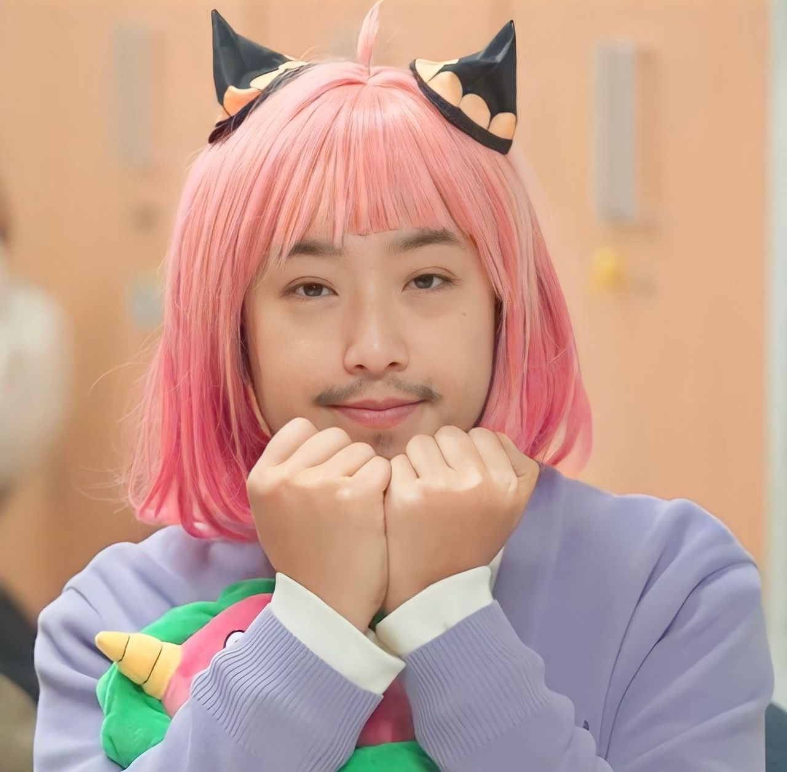
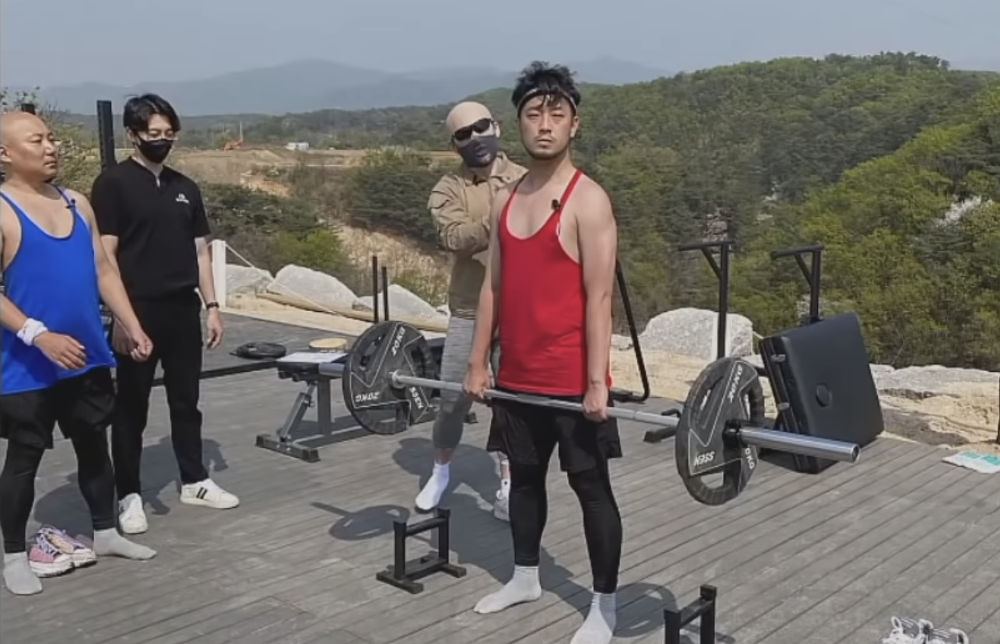
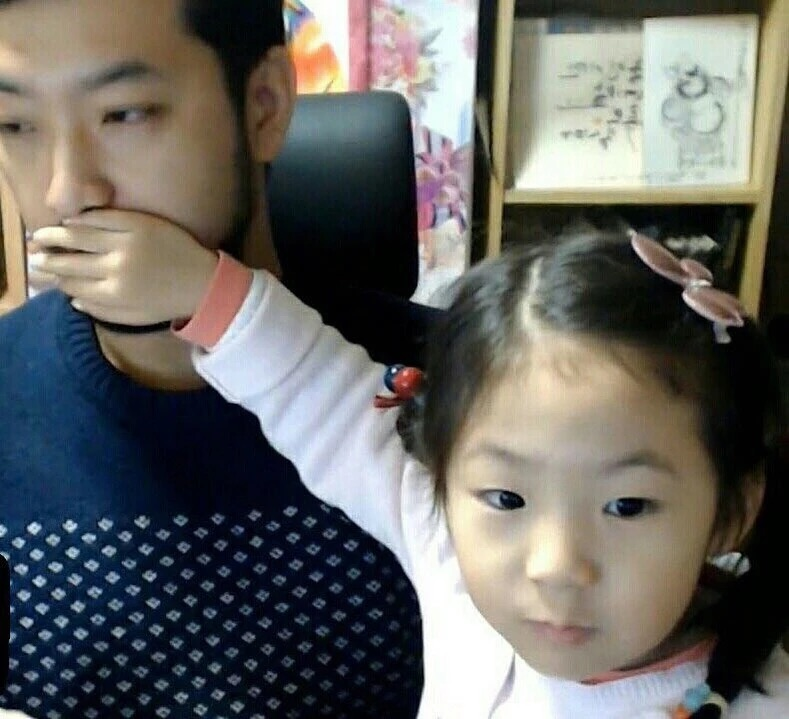
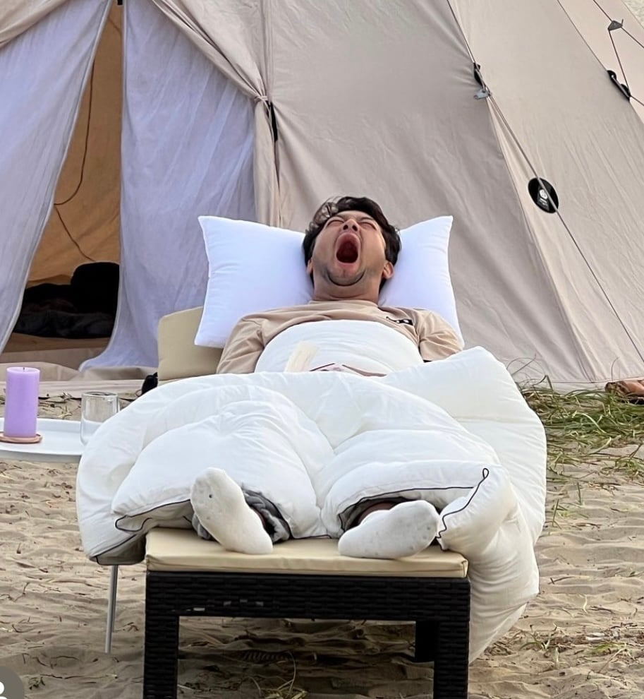
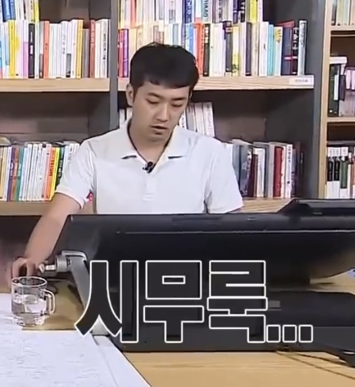
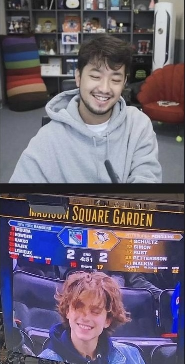
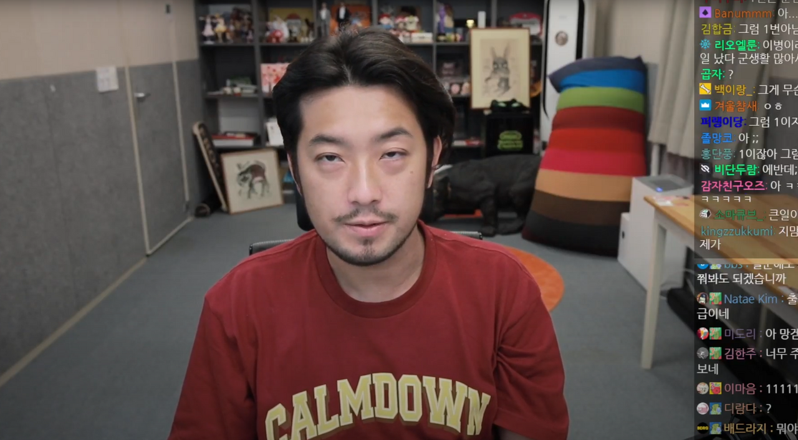
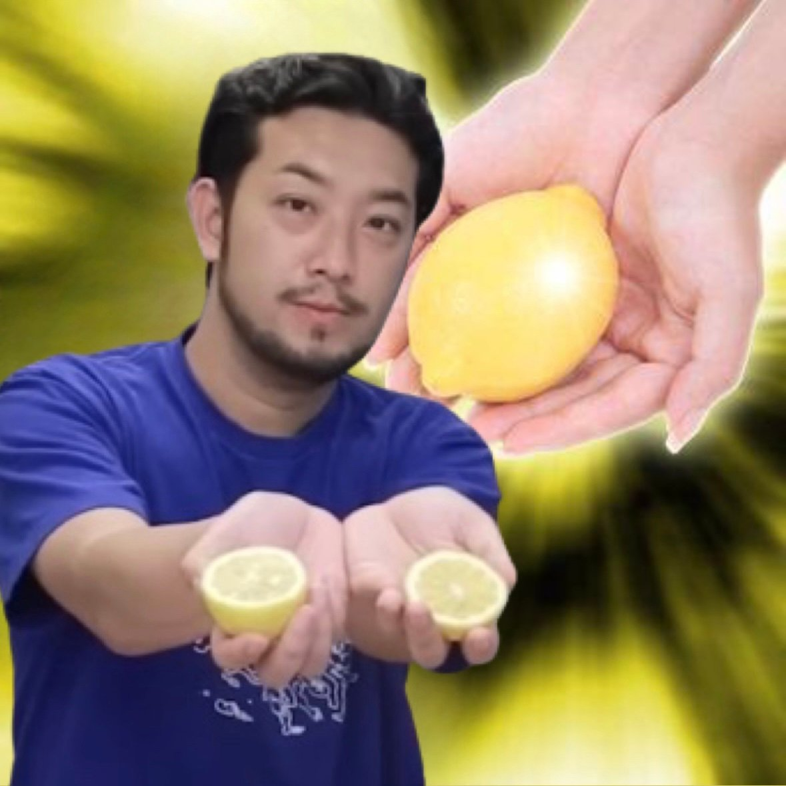
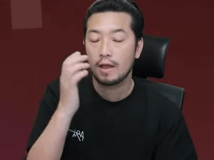
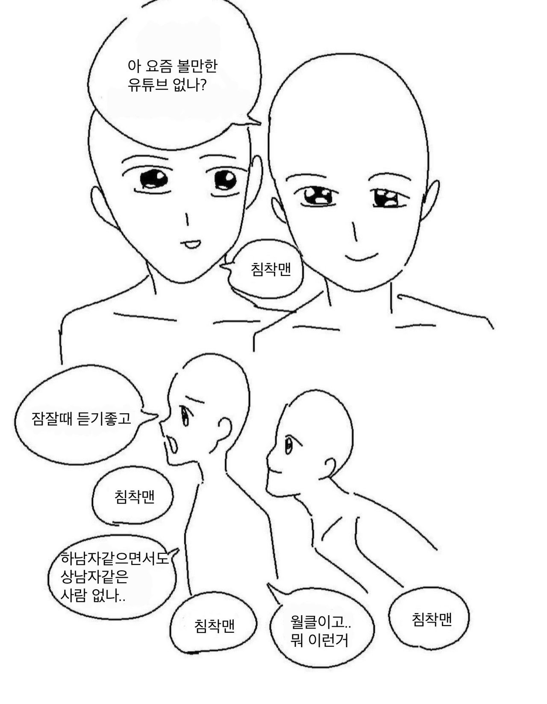

NAME | 이병건, 침착맨
BIRTH | 1983/12/5
BIRTHPLACE | 전라북도 전주시
NATIONALITY | 대한민국
VEHICLE | 제네시스 G80
INCORPERATION | (現)금병영 대표
AFFILIATION | SANDBOX, 배도라지
BROADCATING GANRE |
게임, 먹방, 토크, vlog
ACTIVE PERIOD | 2014년 ~ 현재
FAN NAME | 한국인, 개청자









